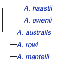
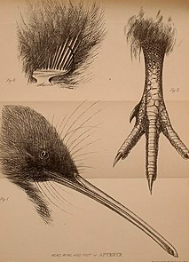

Kiwi (/ˈkiːwiː/ KEE-wee) are flightless birds endemic to New Zealand of the genus Apteryx (/ˈæptərɪks/)and family Apterygidae (/ˌæptəˈrɪdʒədiː/). Approximately the size of a domestic chicken, kiwi are by far the smallest living ratites (which also include ostriches, emus, rheas and cassowaries). DNA sequence comparisons have yielded the surprising conclusion that kiwi are much more closely related to the extinct Malagasy elephant birds than to the moa with which they shared New Zealand. There are five recognised species, four of which are currently listed as vulnerable, and one of which is near-threatened. All species have been negatively affected by historic deforestation but currently the remaining large areas of their forest habitat are well protected in reserves and national parks. At present, the greatest threat to their survival is predation by invasive mammalian predators. The kiwi's egg is one of the largest in proportion to body size (up to 20% of the female's weight) of any species of bird in the world. Other unique adaptations of kiwi, such as their hairlike feathers, short and stout legs, and using their nostrils at the end of their long beak to detect prey before they ever see it, have helped the bird to become internationally well-known. The kiwi is recognised as an icon of New Zealand, and the association is so strong that the term Kiwi is used internationally as the colloquial demonym for New Zealanders.
The Māori language word kiwi is generally accepted to be "of imitative origin" from the call. However, some linguists derive the word from Proto-Nuclear Polynesian *kiwi, which refers to Numenius tahitiensis, the bristle-thighed curlew, a migratory bird that winters in the tropical Pacific islands. With its long decurved bill and brown body, the curlew resembles the kiwi. So when the first Polynesian settlers arrived, they may have applied the word kiwi to the new-found bird. The word is usually uncapitalised when used for the birds. The plural is either the anglicised kiwis or, consistent with the Māori language, appearing as kiwi without an ‑s. The genus name Apteryx is derived from Ancient Greek 'without wing': a- (ἀ-), 'without' or 'not'; ptéryx (πτέρυξ), 'wing'.
Although it was long presumed that the kiwi was closely related to the other New Zealand ratites, the moa, recent DNA studies have identified its closest relative as the extinct elephant bird of Madagascar, and among extant ratites, the kiwi is more closely related to the emu and the cassowaries than to the moa. Research published in 2013 on an extinct genus, Proapteryx, known from the Miocene deposits of the Saint Bathans Fauna, found that it was smaller and probably capable of flight, supporting the hypothesis that the ancestor of the kiwi reached New Zealand independently from moas, which were already large and flightless by the time kiwi appeared.
There are five known species of kiwi, with a number of subspecies.
Their adaptation to a terrestrial life is extensive: like all the other ratites (ostrich, emu, rhea and cassowary), they have no keel on the sternum to anchor wing muscles. The vestigial wings are so small that they are invisible under the bristly, hair-like, two-branched feathers. While most adult birds have bones with hollow insides to minimise weight and make flight practicable, kiwi have marrow, like mammals and the young of other birds. With no constraints on weight due to flight requirements, brown kiwi females carry and lay a single egg that may weigh as much as 450 g (16 oz). Like most other ratites, they have no uropygial gland (preen gland). Their bill is long, pliable and sensitive to touch, and their eyes have a reduced pecten. Their feathers lack barbules and aftershafts, and they have large vibrissae around the gape. They have 13 flight feathers, no tail and a small pygostyle. Their gizzard is weak and their caecum is long and narrow. The eye of the kiwi is the smallest relative to body mass in all avian species resulting in the smallest visual field as well. The eye has small specialisations for a nocturnal lifestyle, but kiwi rely more heavily on their other senses (auditory, olfactory, and somatosensory system). The sight of the kiwi is so underdeveloped that blind specimens have been observed in nature, showing how little they rely on sight for survival and foraging. In an experiment, it was observed that one-third of a population of A. rowi in New Zealand under no environmental stress had ocular lesions in one or both eyes. The same experiment examined three specific specimens that showed complete blindness and found them to be in good physical standing outside of ocular abnormalities. A 2018 study revealed that the kiwi's closest relatives, the extinct elephant birds, also shared this trait despite their great size. Unlike virtually every other palaeognath, which are generally small-brained by bird standards, kiwi have proportionally large encephalisation quotients. Hemisphere proportions are even similar to those of parrots and songbirds, though there is no evidence of similarly complex behaviour.
Before the arrival of humans in the 13th century or earlier, New Zealand's only endemic mammals were three species of bat, and the ecological niches that in other parts of the world were filled by creatures as diverse as horses, wolves and mice were taken up by birds (and, to a lesser extent, reptiles, insects and gastropods). The kiwi's mostly nocturnal habits may be a result of habitat intrusion by predators, including humans. In areas of New Zealand where introduced predators have been removed, such as sanctuaries, kiwi are often seen in daylight. They prefer subtropical and temperate podocarp and beech forests, but they are being forced to adapt to different habitat, such as sub-alpine scrub, tussock grassland, and the mountains. Kiwis have a highly developed sense of smell, unusual in a bird, and are the only birds with nostrils at the end of their long beaks. Kiwi eat small invertebrates, seeds, grubs, and many varieties of worms. They also may eat fruit, small crayfish, eels and amphibians. Because their nostrils are located at the end of their long beaks, kiwi can locate insects and worms underground using their keen sense of smell, without actually seeing or feeling them. This sense of smell is due to a highly developed olfactory chamber and surrounding regions. It is a common belief that the kiwi relies solely on its sense of smell to catch prey but this has not been scientifically observed. Lab experiments have suggested that A. australis can rely on olfaction alone but is not consistent under natural conditions. Instead, the kiwi may rely on auditory and/or vibrotactile cues.
